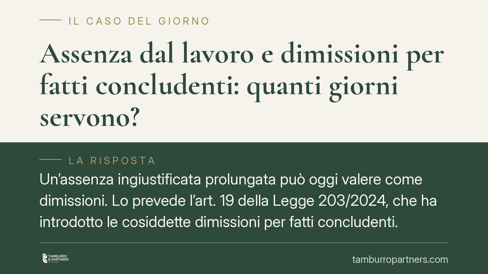

Assenza dal lavoro e dimissioni per fatti concludenti: quanti giorni servono?
Un'assenza ingiustificata prolungata può oggi valere come dimissioni. Lo prevede l'art. 19 della Legge 203/2024, che ha introdotto le cosiddette dimissioni per fatti concludenti. Ma dopo quanti giorni scatta l'effetto risolutivo? La disciplina rinvia al contratto collettivo e, in mancanza, a un termine legale residuale. I primi orientamenti di merito non sono uniformi, e questo genera incertezza per datori e lavoratori.

Il contesto
Fino a poco tempo fa, di fronte a un lavoratore che non si presentava più al posto di lavoro senza giustificazione, il datore aveva sostanzialmente una strada: avviare un licenziamento disciplinare. Questa procedura, però, dà comunque diritto all'indennità di disoccupazione (NASpI), perché il rapporto si chiude per iniziativa datoriale.
Da qui il fenomeno delle cosiddette "dimissioni pilotate": il lavoratore che intende lasciare il posto si limitava a smettere di presentarsi, costringendo il datore a licenziarlo e ottenendo così l'accesso alla NASpI, che invece è preclusa in caso di dimissioni volontarie. Su questo squilibrio è intervenuto il legislatore.
L'inquadramento normativo
Le dimissioni per fatti concludenti sono state introdotte dall'art. 19 della Legge 203/2024 (il cosiddetto Collegato Lavoro), che ha inserito un nuovo comma nell'art. 26 del D.Lgs. 151/2015.
La norma non fissa in modo autonomo un termine unico. Il meccanismo è articolato:
- in caso di assenza ingiustificata protratta oltre il termine previsto dal contratto collettivo applicabile;
- in mancanza di previsione contrattuale, oltre quindici giorni;
il rapporto di lavoro si intende risolto per volontà del lavoratore. Il datore è tenuto a comunicare l'assenza all'Ispettorato territoriale del lavoro (ITL), che può verificare la veridicità della comunicazione.
L'effetto pratico è duplice: il rapporto si chiude come se il lavoratore si fosse dimesso, con la conseguente esclusione dall'accesso alla NASpI. La ratio è proprio impedire le dimissioni mascherate da licenziamento.
La norma prevede un correttivo: l'effetto risolutivo non opera se il lavoratore dimostra l'impossibilità di comunicare i motivi giustificativi dell'assenza per causa di forza maggiore o per fatto imputabile al datore. Sugli aspetti applicativi è intervenuta anche una nota di prassi dell'Ispettorato Nazionale del Lavoro, i cui estremi vanno verificati sulla documentazione ufficiale prima di ogni utilizzo operativo.
Il nodo interpretativo
Il punto controverso riguarda il coordinamento tra il termine dell'art. 19 e la disciplina del licenziamento disciplinare. Il procedimento disciplinare è regolato dall'art. 7 della Legge 300/1970 (Statuto dei Lavoratori) e prevede tempi propri, con contestazione dell'addebito e diritto di difesa del lavoratore.
Si discute se, di fronte a un'assenza ingiustificata, prevalga il termine più breve eventualmente ricavabile dalla logica disciplinare oppure quello, tendenzialmente più lungo, indicato dall'art. 19. La differenza non è teorica: incide sul momento in cui il rapporto si considera sciolto e, di riflesso, sul diritto alle prestazioni previdenziali.
Su questo terreno si registrano primi orientamenti di merito non uniformi. Alcune pronunce tendono a valorizzare il termine legale residuale dei quindici giorni (o quello del CCNL) come soglia autonoma della fattispecie; altre lo leggono in continuità con la disciplina del recesso disciplinare. Trattandosi di orientamenti recenti e non ancora consolidati, è prudente attenderne il consolidamento in sede di legittimità prima di trarne indicazioni definitive. Gli estremi delle singole sentenze vanno verificati caso per caso: non è corretto attribuire a un foro un principio senza il riferimento puntuale alla pronuncia.
Le implicazioni pratiche
Per il datore di lavoro, la nuova disciplina offre un'alternativa al licenziamento ma impone un onere procedurale: la comunicazione all'ITL non è una formalità, perché da essa dipende la corretta qualificazione della vicenda. Una gestione imprecisa espone al rischio di contestazioni sulla natura della cessazione.
Per il lavoratore, l'assenza prolungata non è più una via priva di conseguenze: può tradursi in una risoluzione qualificata come dimissioni, con perdita della NASpI. Chi ha un motivo legittimo di assenza deve documentarlo tempestivamente.
Cosa fare in concreto
Per il datore di lavoro:
- Verifica il termine di assenza previsto dal CCNL applicabile prima di attivare qualsiasi procedura.
- Comunica l'assenza ingiustificata all'Ispettorato territoriale del lavoro nei modi e nei tempi corretti.
- Conserva la documentazione relativa ai tentativi di contatto con il lavoratore.
Per il lavoratore:
- Comunica sempre e per iscritto i motivi dell'assenza, anche in caso di impedimento sopravvenuto.
- Se l'assenza dipende da forza maggiore o da fatto del datore, raccogli e conserva le prove documentali a supporto.
Data l'incertezza interpretativa in attesa di pronunce di legittimità, è opportuno gestire ogni situazione con attenzione documentale, evitando decisioni affrettate sulla qualificazione della cessazione.
Disclaimer
Contributo informativo a cura di Tamburro & Partners Avvocati - Avv. Giuseppe Tamburro. Non costituisce parere legale.
Ogni storia di lavoro ha i suoi tempi.
Se gestisci HR e vuoi un confronto su contenzioso, ispezioni o licenziamenti, scrivi allo studio. Ti rispondiamo entro un giorno lavorativo.